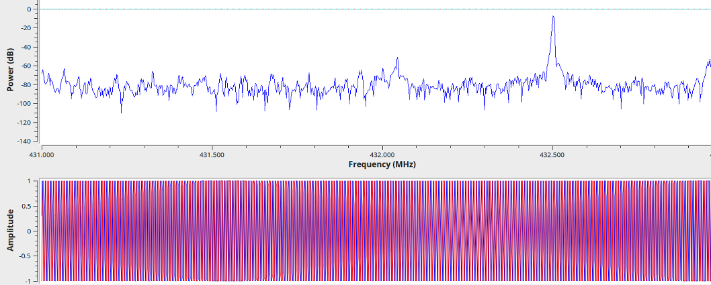
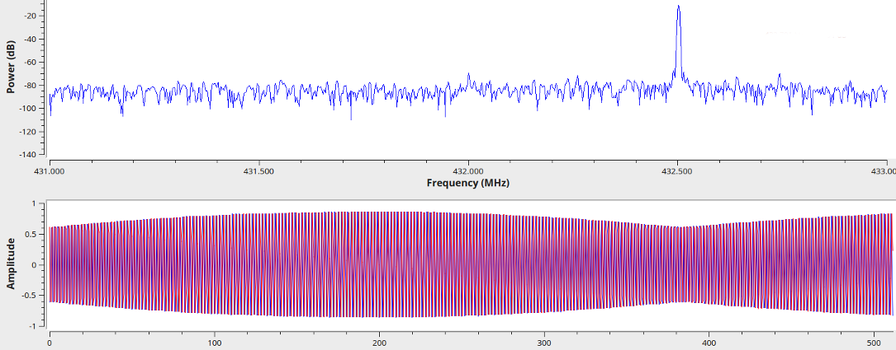

examples/ directory. That said,
please keep in mind that this is not a finalized product, but rather a proof of
concept implementation which you are invited to tinker and experiment with. I
assume that you already successfully compiled and installed gr-ysf.
Otherwise, please refer to the README.md on the
github page for instruction on compiling the
project. It surely helps to have some general understanding of how GNU Radio and
the gnuradio-companion work. Please refer to the
video series by Mike Ossman and the introduction by Al Williams
(part 1,
part 2)
if you feel that you are lacking those skills.
Start up the gnuradio-companion and load the
examples/ysf_rx.grc flowgraph. The Polyphase Clock Sync block
currently requires an input sampling rate of 80 kHz. You have to set the
hardware sampling rate samp_rate and the Frequency Xlating FIR
Filter decimation factor decimator accordingly. For example, if
you are using a HackRF One, you could set samp_rate to 8 MHz
(8e6) and decimator to 100. If you use an
RTL-SDR dongle, I recommend a samp_rate of 2 MHz (2e6)
and a decimator of 25. You can set those values by
double-clicking the corresponding variable blocks in the top left corner of the
flowgraph. If some part of the flowgraph gets red, a mistake was detected and you
have to address that. This happens e.g. if you enter 2M instead of
2e6 into the sampling rate field.
Decide on a frequency to transmit and tune your radio accordingly. Set the
target frequency target_freq to the same frequency. Set the
center_freq variable to a frequency that is close to, but offset
from your transmit frequency. Do not set center_freq to your exact
transmit frequency. The reason for this is that every receiver based on
quadrature sampling will exhibit a spike at DC. This is an artifact that is
more prominent in some receivers than others, but it is trivial to overcome
this potential problem by simply introducing this offset.
Example: If you have your transmitter set to 432.500 MHz, set
target_freq to 432.8e6 and center_freq
to 432.0e6. This way, the center frequency of 432.0 MHz
introduces an 500 kHz offset to avoid said problem. The exact offset chosen
does not matter as long as it is away from the DC spike, yet still within the
sampling bandwidth of samp_rate around your target frequency.
It should be unnecessary to state this explicitly, but the example frequencies in this document and the default frequencies in the example receiver are within the ham-radio band in my country. This might be different for you so please check that it's legal for you to transmit on your target frequency...
In this step, you have to set the gain of your dongle for optimal acquisition. If your gain is too high (or your transmitter too close and strong), you will overdrive the receiver front-end. If your gain is too low, the acquired signal is too weak, resulting in poor decoding performance. With the hardware I used (HackRF One and RTL-SDR dongle), the two numbers that need tweaking are the IF gain and the BB gain in the osmocom Source. Please refer to external documentation for allowed gain figures regarding your hardware. This seems to be the FAQ in the case of the HackRF One; I am not quite sure about the RTL-SDR dongle. Note however that the RF gain turns on a pre-amplifier of the HackRF One. You probably don't want that in order to protect your hardware. Hence I recommend keeping the RF Gain at 0.
Run the flowgraph and transmit on the target frequency. This will pop up a window with four tabs. Stay in the leftmost Wideband tab. When you hit the PTT, a spike should appear in the top spectrum. A sinusoidal should appear in the bottom time domain representation. Set the gains such that you get a nice spike. If you have too much gain, artifacts will appear left and right of the spike and the sinusoidal will exceed an amplitude of 1. This will look as shown in the screen-shot below and is not good.
Similarly, if your gains are too low, the spike will be closer to the noise floor and the sinusoidal wave will have an amplitude below 1. Of course, if you're tuning into a weak station then that's as good as it gets, but my advice is to try with a good signal first and then go from there. A good acquisition has an amplitude slightly below 1 and a clean frequency spike without intermodulation products, as shown in the next screen-shot. This can often be obtained using the autoamtic gain control of the hardware (Gain Mode: Automatic).
Since the system does not yet have automatic frequency correction (AFC, see issue #3), you will not get a good decode unless the target frequency is aligned fairly well. Chances are that the oscillator inside your hardware is off and/or exhibits drift. Proceed as follows to check for proper alignment: Switch to the second tab (Channel) and transmit. It is easiest to transmit in FM without modulation, though doing so digitally will work as well.
When using FM, center the spike within the passband of the channel-filter. You can do
so by changing the target_freq variable. If this becomes a tedious procedure,
you can add a GUI slider. The following screen-show shows instances of a target frequency
that is too low (left), correct (center) and too high (right). Change the
target frequency until the spike is centered as shown in the center case. Don't get confused
that the spike is displayed at too high a frequency when the target frequency
is actually too low, that's exactly the effect that your are correcting for...
When using digital, the process is pretty much the same but instead of a nice spike, you get a skewed bump. You can use the time domain plot below the spectrum in the Channel tab in the same way as before: Ideally the quadrature signal has an amplitude of 1.
That completes the setup. If you now transmit in DN mode, you should get FICH packet dumps in the console window of gnuradio-companion as well as in the terminal from which you started the companion. Decoded audio will be played back through the speaker.